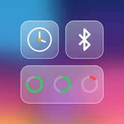
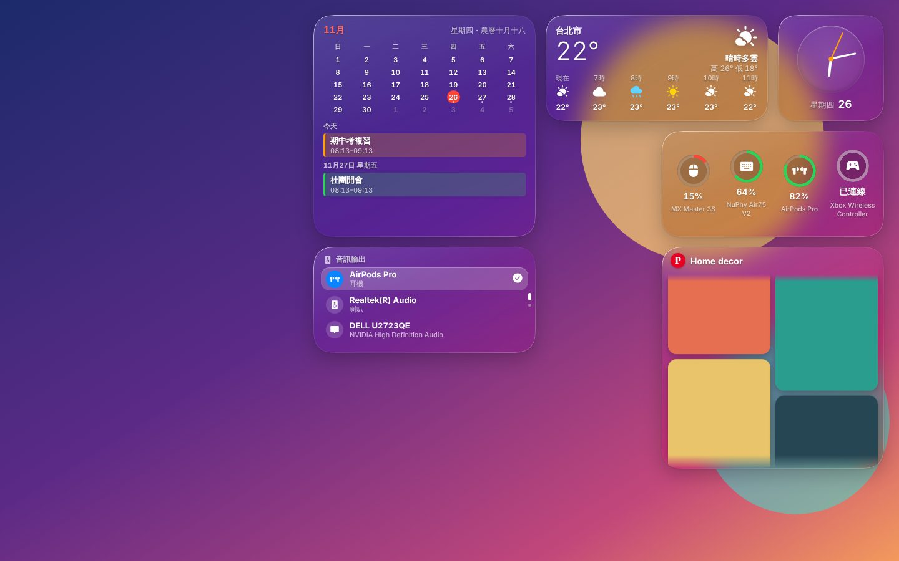

Glass Widgets
Rounded, frosted-glass widgets for the Windows 11 desktop. A free, open-source desktop app — not a social network, no account with us, no ads.
Download for Windows
Pinterest boards
Sign in with Pinterest and pick one of your own boards. Its Pins slowly scroll in a widget; click a Pin to open it on Pinterest. Read-only.
Bluetooth battery
Battery rings for earbuds, mice, keyboards and controllers, plus a small pop-up when a device connects or runs low.
Google Calendar
Today's date and your upcoming events, read-only.
Weather & clock
Local forecast from Open-Meteo and an analog clock.
Audio output
See where sound is playing and switch speakers or headphones with one click.
Three sizes, snap to grid
Small, medium and large widgets that snap into place and stay on the desktop layer, behind your windows.
How Glass Widgets uses Pinterest
Glass Widgets lets a person show Pins from their own Pinterest boards on their own Windows desktop.
- The user clicks “Sign in with Pinterest” in the app and approves access on pinterest.com (scopes:
boards:read,pins:read, and optionally the secret-board equivalents). - The app lists the user's boards; the user chooses one.
- The app downloads that board's Pin images and shows them in a desktop widget. Clicking a Pin opens it on pinterest.com.
The app never creates, edits or deletes anything on Pinterest, never shows one user's Pins to anyone else, and has no server: the access token is stored encrypted on the user's computer and is only sent to Pinterest's API. The user can sign out in the app or revoke access in their Pinterest settings at any time.
Privacy
No analytics, no ads, no tracking, and no data sent to the developer. Read the full privacy policy.